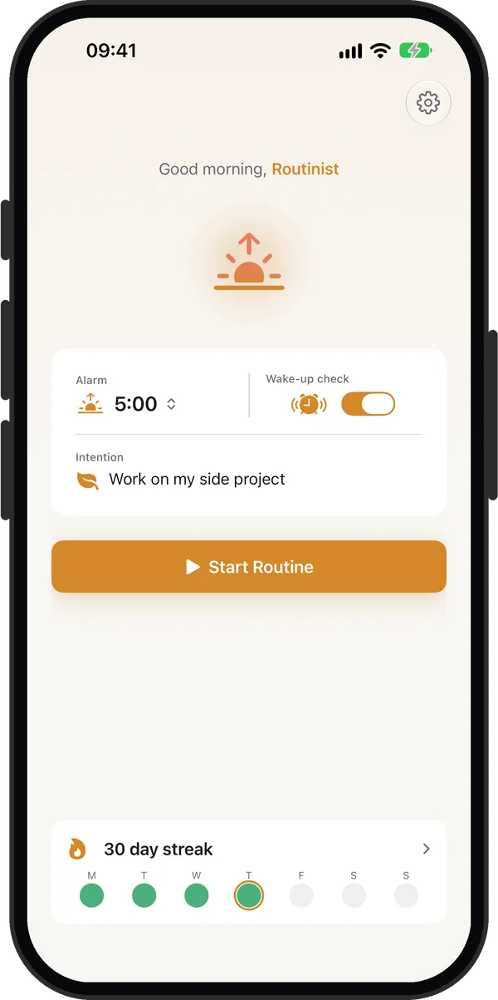
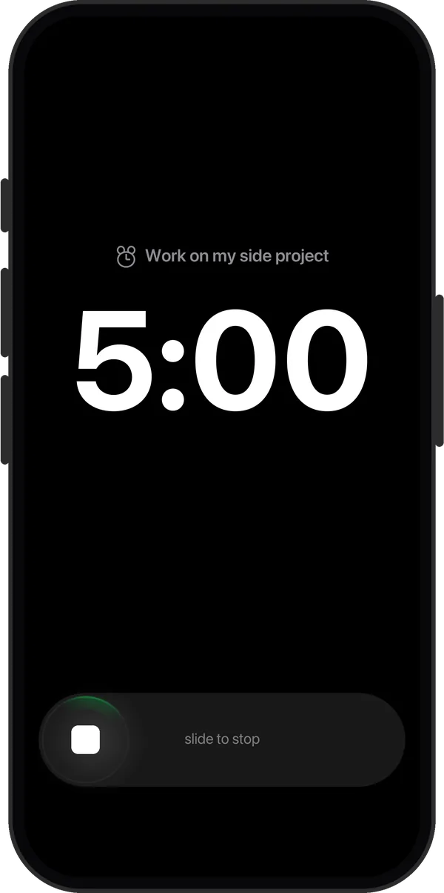
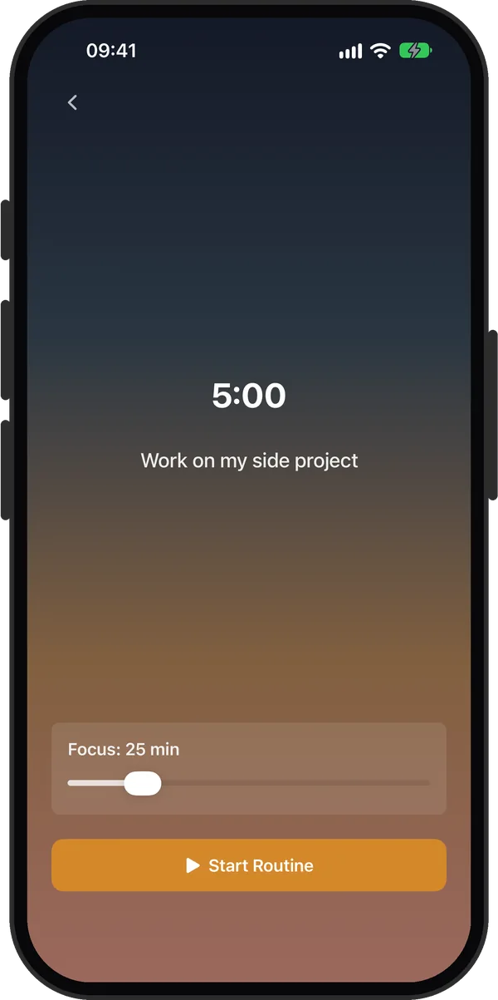
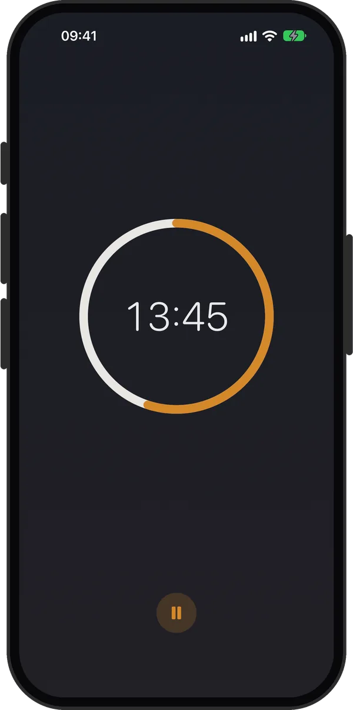
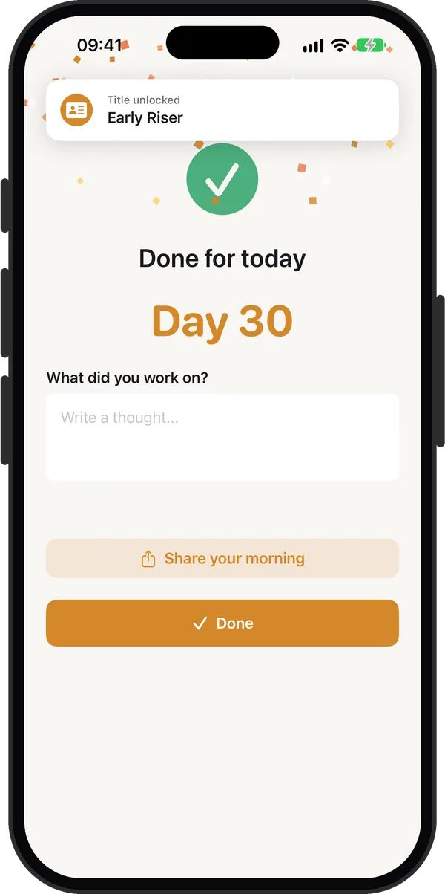
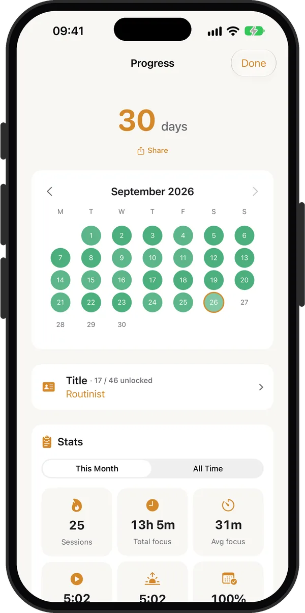
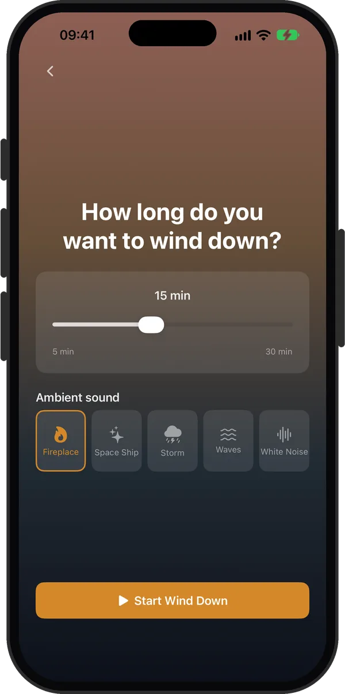

Morning Routine App
Rise guides you through a calm, structured morning, from alarm to focus session, so you can start every day intentionally.
Free to try. Pro is yearly with a 7-day free trial, or once for life.

How It Works
Rise turns your morning into a ritual. Each step flows naturally into the next.
Set your wake time. Rise uses real system alarms that ring in Silent mode and through Focus.
Stopping the alarm opens a focus timer. Read, journal, stretch, or just breathe before the day opens up.
A short prompt about your morning closes each session. With Pro, write an answer and look back on it later.
Each finished morning extends your streak. Come back tomorrow and the chain grows.
See it in action
Clean interface, warm tones, and zero distractions.






Features
Designed to be calm, focused, and distraction-free.
Real system alarms powered by Apple's AlarmKit. They ring on time, even in Silent mode.
5 to 15 minutes free, up to 120 with Pro. Start one after your alarm, or later in the day with Focus now.
A calm evening session with ambient sound to ease you out of the day. Free to try, longer with Pro.
Build momentum every morning. With Pro: calendar history, and a weekly streak freeze for the days life gets in the way.
Earn titles for your routine, like Early Bird, Marathoner and Routinist, worn in your morning greeting. Beginner is free, the other 45 come with Pro.
With Pro, write an optional thought at the end of each session. They stack up so you can look back weeks later.
With Pro, Rise records your wake-up time in Apple Health and saves each focus session as mindful minutes.
Your settings, streak, and journal back up privately to your iCloud, free. Restore on a new device in one tap.
Streak and next-alarm widgets for your Home Screen. The focus timer counts down on the Lock Screen and in the Dynamic Island.
Pricing
The core morning flow is free. Pro unlocks longer sessions and the extras.
The free trial comes with the yearly plan. Cancel any time in your iPhone's Settings. Prices are shown in your currency on the App Store.
Guides
Practical guides to getting up, staying off the phone, and building a routine that lasts.
FAQ
Yes. Rise uses Apple's AlarmKit, the framework for real system alarms, so your alarm rings in Silent mode and through Do Not Disturb and Focus. It needs iOS 26.2 or later. Read the guide
The alarm has one button, Stop, and stopping it opens Rise's wake-up screen with a focus timer. Pick a length and start a session: read, journal, stretch, or just sit with a coffee. Finishing it adds a day to your streak. Read the guide
Yes. If you have not had a session yet today, Focus now on the Home screen starts one at any hour. Read the guide
A second alarm, 5, 10 or 20 minutes after your wake-up alarm, that rings only if you have not started your morning session. Starting the session cancels it for the day. It is part of Rise Pro. Read the guide
Free: the alarm, focus sessions of 5, 10 or 15 minutes, Wind Down up to 10 minutes, your streak, the Beginner title, Live Activities, the Home Screen widgets and iCloud backup. Pro adds sessions up to 120 minutes, the wake-up check, streak history and freezes, reflections, all titles, Apple Health and longer Wind Down. Pro is a yearly plan with a 7-day free trial, or a one-time Lifetime purchase.
Your streak resets. With Pro you can freeze it once a week: tap the freeze on a day you cannot make it and the streak holds. Read the guide
Rise is designed for iPhone. You can also install it on an iPad, where it runs as an iPhone app.
No. There is no sign-up. Your routine data stays on your device, with an optional backup to your own iCloud.
Your morning sets the tone for your entire day. Make it count.